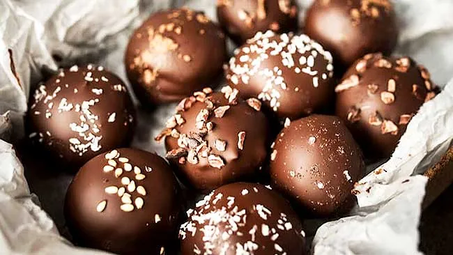
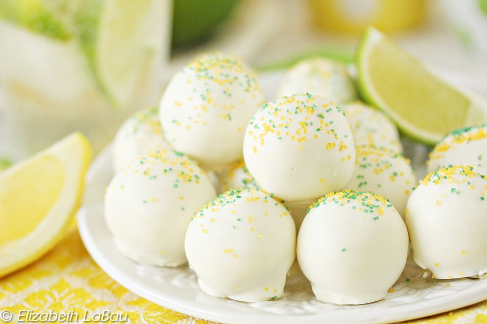
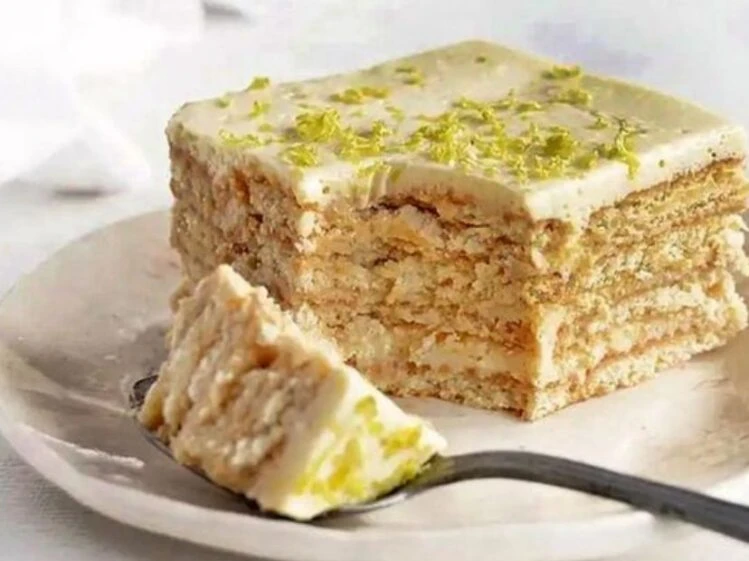
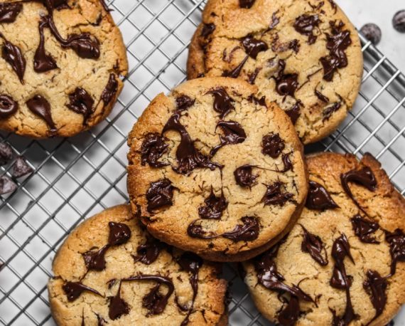

Trufas de café
Masa de galletas trituradas saborizadas con expreso concentrado y humedecido con delicioso creso crema para darle una consistencia masisa pero a la vez sueve, todo esto en forma de bola y cubierto con chocolate con leche y espolvoreado con trozos de galleta para darle una textura adicional en cada bocado.
Trufas de limón
Masa de galletas de limón trituradas y humedecido con delicioso creso crema para darle una consistencia masisa pero a la vez suave, todo esto en forma de cubo y cubierto con chocolate blanco y espolvoreado con chispitas doradas para darle una textura adicional y un toque de elegancia en cada bocado.
Marquesas de limón
Postre a base de queso crema, con el delicioso y agradable acido leve del limón, mezclado para hacer una crema suave y delicada entre capas de galletas de vainilla remojadas previamente en leche lo que le da un sabor único y aún más humedo, su capa superior es un ganache realizado con chocolate blanco con trocitos de ralladura de limón y decorado con rodajas de limón caramelizado, caracteristica que le brinda un aspecto único y sabor delicioso, encatador y con el que alegraras tu día o el de tus seres queridos.
Galletas de chispas de chocolate
La tipica receta de galletas con chips de chocolate, harina de trico fortificada con vitaminas, mantequuilla, pero con menos azucar y un delicioso sabor a vainilla caramelizada, en su interior encontraras deliciosas chispas de chocolate, de igual manera en la superficie estará decorado con más chispas de chocolate garantizando un delicioso sabor en cada mordida.